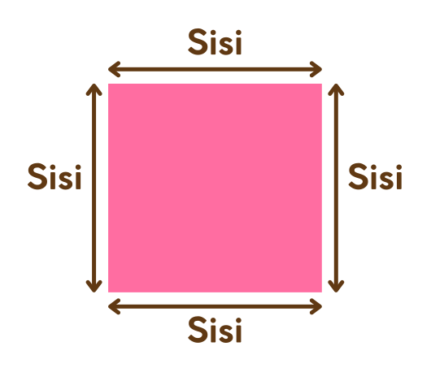
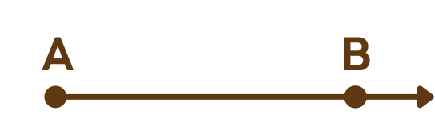
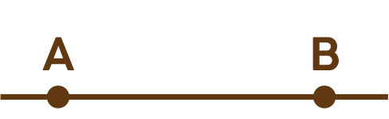
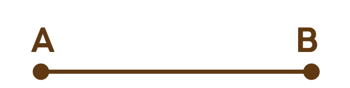
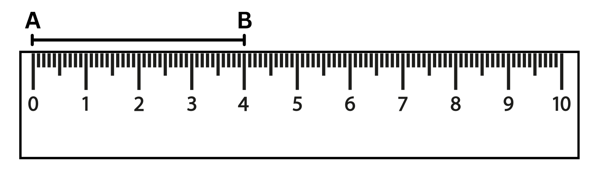
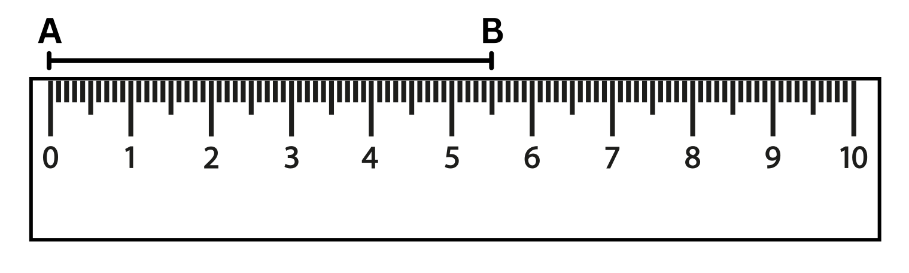
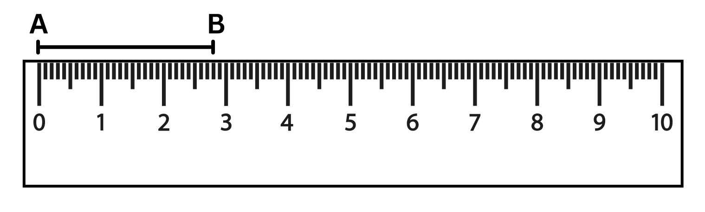

Belajar mengenal sisi, jenis garis, dan cara mengukur panjang ruas garis
Sisi pada bangun datar adalah garis yang membentuk suatu bangun. Sisi dapat berupa garis lurus maupun garis lengkung.


Garis yang memiliki satu titik awal dan memanjang ke satu arah tanpa batas.

Garis memanjang ke dua arah tanpa batas dan tidak memiliki titik ujung.

Garis yang memiliki dua titik ujung dengan panjang tertentu.
Penggaris digunakan untuk mengukur panjang garis. Pada penggaris terdapat satuan centimeter (cm) dan millimeter (mm).
Setiap 1 centimeter dibagi menjadi 10 bagian kecil yang disebut millimeter.


